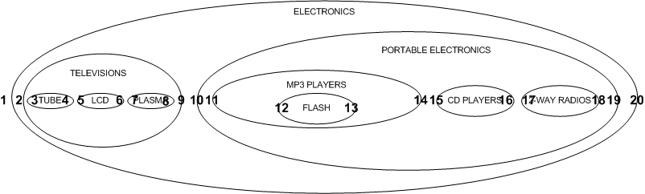

Managing Hierarchical Data...
...in tables

How?
Adjacency List Model
Nested Set Model
Adjacency List Model
SELECT * FROM category ORDER BY category_id; +-------------+----------------------+--------+ | category_id | name | parent | +-------------+----------------------+--------+ | 1 | ELECTRONICS | NULL | | 2 | TELEVISIONS | 1 | | 3 | TUBE | 2 | | 4 | LCD | 2 | | 5 | PLASMA | 2 | | 6 | PORTABLE ELECTRONICS | 1 | | 7 | MP3 PLAYERS | 6 | | 8 | FLASH | 7 | | 9 | CD PLAYERS | 6 | | 10 | 2 WAY RADIOS | 6 | +-------------+----------------------+--------+
Retrieving a Full Tree
-- The most common way of doing this is in pure SQL is through the use of a self-join.
SELECT t1.name AS lev1, t2.name as lev2, t3.name as lev3, t4.name as lev4
FROM category AS t1
LEFT JOIN category AS t2 ON t2.parent = t1.category_id
LEFT JOIN category AS t3 ON t3.parent = t2.category_id
LEFT JOIN category AS t4 ON t4.parent = t3.category_id
WHERE t1.name = 'ELECTRONICS';
+-------------+----------------------+--------------+-------+ | lev1 | lev2 | lev3 | lev4 | +-------------+----------------------+--------------+-------+ | ELECTRONICS | TELEVISIONS | TUBE | NULL | | ELECTRONICS | TELEVISIONS | LCD | NULL | | ELECTRONICS | TELEVISIONS | PLASMA | NULL | | ELECTRONICS | PORTABLE ELECTRONICS | MP3 PLAYERS | FLASH | | ELECTRONICS | PORTABLE ELECTRONICS | CD PLAYERS | NULL | | ELECTRONICS | PORTABLE ELECTRONICS | 2 WAY RADIOS | NULL | +-------------+----------------------+--------------+-------+
Finding Leaf Nodes
-- We can find all the leaf nodes in our tree (those with no children) by using a LEFT JOIN query
SELECT t1.name
FROM category AS t1 LEFT JOIN category as t2
ON t1.category_id = t2.parent
WHERE t2.category_id IS NULL;
+--------------+ | name | +--------------+ | TUBE | | LCD | | PLASMA | | FLASH | | CD PLAYERS | | 2 WAY RADIOS | +--------------+
Retrieving a Single Path
-- The self-join also allows us to see the full path through our hierarchies
SELECT t1.name AS lev1, t2.name as lev2, t3.name as lev3, t4.name as lev4
FROM category AS t1
LEFT JOIN category AS t2 ON t2.parent = t1.category_id
LEFT JOIN category AS t3 ON t3.parent = t2.category_id
LEFT JOIN category AS t4 ON t4.parent = t3.category_id
WHERE t1.name = 'ELECTRONICS' AND t4.name = 'FLASH';
+-------------+----------------------+-------------+-------+ | lev1 | lev2 | lev3 | lev4 | +-------------+----------------------+-------------+-------+ | ELECTRONICS | PORTABLE ELECTRONICS | MP3 PLAYERS | FLASH | +-------------+----------------------+-------------+-------+
Adjacency List Model
Pros
- Simple to reason with
- Easy access to parent
Cons
- Lots of joins
Nested Set Model
Instead of this...
Nested Set Model
Arrange like this...

Nested Set Model
No really, like this...
Left (lft) and Right (rgt) values represent the lower and upper bounds of our set.
Nested Set Model
Which is like this...

Nested Set Model
Left (lft) and Right (rgt) values represent the lower and upper bounds of each set.
SELECT * FROM nested_category ORDER BY category_id; +-------------+----------------------+-----+-----+ | category_id | name | lft | rgt | +-------------+----------------------+-----+-----+ | 1 | ELECTRONICS | 1 | 20 | | 2 | TELEVISIONS | 2 | 9 | | 3 | TUBE | 3 | 4 | | 4 | LCD | 5 | 6 | | 5 | PLASMA | 7 | 8 | | 6 | PORTABLE ELECTRONICS | 10 | 19 | | 7 | MP3 PLAYERS | 11 | 14 | | 8 | FLASH | 12 | 13 | | 9 | CD PLAYERS | 15 | 16 | | 10 | 2 WAY RADIOS | 17 | 18 | +-------------+----------------------+-----+-----+
Retrieving a Full Tree
-- Adjacency List Model
SELECT t1.name AS lev1, t2.name as lev2, t3.name as lev3, t4.name as lev4
FROM category AS t1
LEFT JOIN category AS t2 ON t2.parent = t1.category_id
LEFT JOIN category AS t3 ON t3.parent = t2.category_id
LEFT JOIN category AS t4 ON t4.parent = t3.category_id
WHERE t1.name = 'ELECTRONICS';
-- Nested Set Model
-- We can retrieve the full tree through the use of a self-join that links parents with nodes
-- on the basis that a node's lft value will always appear between its parent's lft and rgt values
SELECT node.name
FROM nested_category AS node,
nested_category AS parent
WHERE node.lft BETWEEN parent.lft AND parent.rgt
AND parent.name = 'ELECTRONICS'
ORDER BY node.lft;
+----------------------+ | name | +----------------------+ | ELECTRONICS | | TELEVISIONS | | TUBE | | LCD | | PLASMA | | PORTABLE ELECTRONICS | | MP3 PLAYERS | | FLASH | | CD PLAYERS | | 2 WAY RADIOS | +----------------------+
Finding Leaf Nodes
-- Adjacency List Model
SELECT t1.name
FROM category AS t1 LEFT JOIN category as t2
ON t1.category_id = t2.parent
WHERE t2.category_id IS NULL;
-- Nested Set Model
-- To find the leaf nodes, we look for nodes where rgt = lft + 1
SELECT name
FROM nested_category
WHERE rgt = lft + 1;
+--------------+ | name | +--------------+ | TUBE | | LCD | | PLASMA | | FLASH | | CD PLAYERS | | 2 WAY RADIOS | +--------------+
Retrieving a Single Path
-- Adjacency List Model
SELECT t1.name AS lev1, t2.name as lev2, t3.name as lev3, t4.name as lev4
FROM category AS t1
LEFT JOIN category AS t2 ON t2.parent = t1.category_id
LEFT JOIN category AS t3 ON t3.parent = t2.category_id
LEFT JOIN category AS t4 ON t4.parent = t3.category_id
WHERE t1.name = 'ELECTRONICS' AND t4.name = 'FLASH';
+-------------+----------------------+-------------+-------+ | lev1 | lev2 | lev3 | lev4 | +-------------+----------------------+-------------+-------+ | ELECTRONICS | PORTABLE ELECTRONICS | MP3 PLAYERS | FLASH | +-------------+----------------------+-------------+-------+
-- Nested Set Model
-- With the nested set model, we can retrieve a single path without having multiple self-joins
SELECT parent.name
FROM nested_category AS node,
nested_category AS parent
WHERE node.lft BETWEEN parent.lft AND parent.rgt
AND node.name = 'FLASH'
ORDER BY parent.lft;
+----------------------+ | name | +----------------------+ | ELECTRONICS | | PORTABLE ELECTRONICS | | MP3 PLAYERS | | FLASH | +----------------------+
Find the Depth of Nodes
-- This can be done by adding a COUNT function and a GROUP BY clause to our existing query
-- for showing the entire tree.
SELECT node.name, (COUNT(parent.name) - 1) AS depth
FROM nested_category AS node,
nested_category AS parent
WHERE node.lft BETWEEN parent.lft AND parent.rgt
GROUP BY node.name, node.lft
ORDER BY node.lft;
+----------------------+-------+ | name | depth | +----------------------+-------+ | ELECTRONICS | 0 | | TELEVISIONS | 1 | | TUBE | 2 | | LCD | 2 | | PLASMA | 2 | | PORTABLE ELECTRONICS | 1 | | MP3 PLAYERS | 2 | | FLASH | 3 | | CD PLAYERS | 2 | | 2 WAY RADIOS | 2 | +----------------------+-------+
Find the Depth of Nodes (Visual)
-- We can use the depth value to indent our category names with the CONCAT and REPLICATE string functions
SELECT CONCAT(REPLICATE(' ', COUNT(parent.name) - 1), node.name) AS name
FROM nested_category AS node,
nested_category AS parent
WHERE node.lft BETWEEN parent.lft AND parent.rgt
GROUP BY node.name, node.lft
ORDER BY node.lft;
+-----------------------+ | name | +-----------------------+ | ELECTRONICS | | TELEVISIONS | | TUBE | | LCD | | PLASMA | | PORTABLE ELECTRONICS | | MP3 PLAYERS | | FLASH | | CD PLAYERS | | 2 WAY RADIOS | +-----------------------+
Aggregate Functions
SELECT * FROM product; +------------+-------------------+-------------+ | product_id | name | category_id | +------------+-------------------+-------------+ | 1 | 20" TV | 3 | | 2 | 36" TV | 3 | | 3 | Super-LCD 42" | 4 | | 4 | Ultra-Plasma 62" | 5 | | 5 | Value Plasma 38" | 5 | | 6 | Power-MP3 128mb | 7 | | 7 | Super-Shuffle 1gb | 8 | | 8 | Porta CD | 9 | | 9 | CD To go! | 9 | | 10 | Family Talk 360 | 10 | +------------+-------------------+-------------+
-- Now let's produce a query that can retrieve our category tree, along with a product count for each category.
SELECT parent.name, COUNT(product.name)
FROM nested_category AS node ,
nested_category AS parent,
product
WHERE node.lft BETWEEN parent.lft AND parent.rgt
AND node.category_id = product.category_id
GROUP BY parent.name
ORDER BY MIN(node.lft);
+----------------------+---------------------+ | name | COUNT(product.name) | +----------------------+---------------------+ | ELECTRONICS | 10 | | TELEVISIONS | 5 | | TUBE | 2 | | LCD | 1 | | PLASMA | 2 | | PORTABLE ELECTRONICS | 5 | | MP3 PLAYERS | 2 | | FLASH | 1 | | CD PLAYERS | 2 | | 2 WAY RADIOS | 1 | +----------------------+---------------------+
Adding New Nodes
-- If we wanted to add a new node between the TELEVISIONS and PORTABLE ELECTRONICS nodes, the new node
-- would have lft and rgt values of 10 and 11, and all nodes to its right would have their lft and rgt values
-- increased by two.
-- We would then add the new node with the appropriate lft and rgt values.
BEGIN TRANSACTION;
DECLARE @myRight AS INT
SELECT @myRight = rgt FROM nested_category
WHERE name = 'TELEVISIONS';
UPDATE nested_category SET rgt = rgt + 2 WHERE rgt > @myRight;
UPDATE nested_category SET lft = lft + 2 WHERE lft > @myRight;
INSERT INTO nested_category(name, lft, rgt) VALUES('GAME CONSOLES', @myRight + 1, @myRight + 2);
COMMIT;
+-----------------------+ | name | +-----------------------+ | ELECTRONICS | | TELEVISIONS | | TUBE | | LCD | | PLASMA | | GAME CONSOLES | | PORTABLE ELECTRONICS | <-- New | MP3 PLAYERS | | FLASH | | CD PLAYERS | | 2 WAY RADIOS | +-----------------------+
Deleting New Nodes
-- When deleting a node, the process is just the opposite of adding a new node,
-- we delete the node and its width from every node to its right.
BEGIN TRANSACTION;
DECLARE @myLeft AS INT
DECLARE @myRight AS INT
DECLARE @myWidth AS INT
SELECT @myLeft = lft, @myRight = rgt, @myWidth = rgt - lft + 1
FROM nested_category
WHERE name = 'GAME CONSOLES';
DELETE FROM nested_category WHERE lft BETWEEN @myLeft AND @myRight;
UPDATE nested_category SET rgt = rgt - @myWidth WHERE rgt > @myRight;
UPDATE nested_category SET lft = lft - @myWidth WHERE lft > @myRight;
COMMIT;
Nested Set Model
Pros
- Less Joins, simpler queries
- N-level support
Cons
- Weird and harder to reason with
Hybrid approach?
Questions?
http://mikehillyer.com/articles/managing-hierarchical-data-in-mysql/